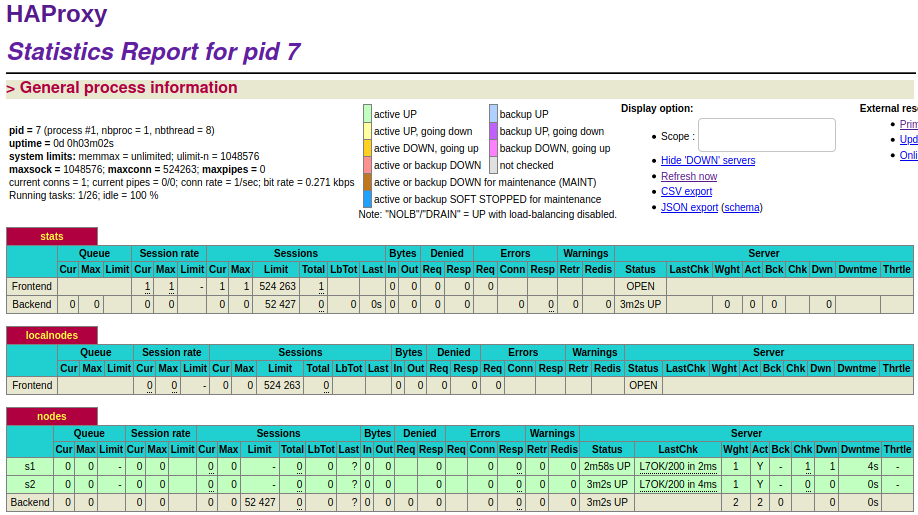
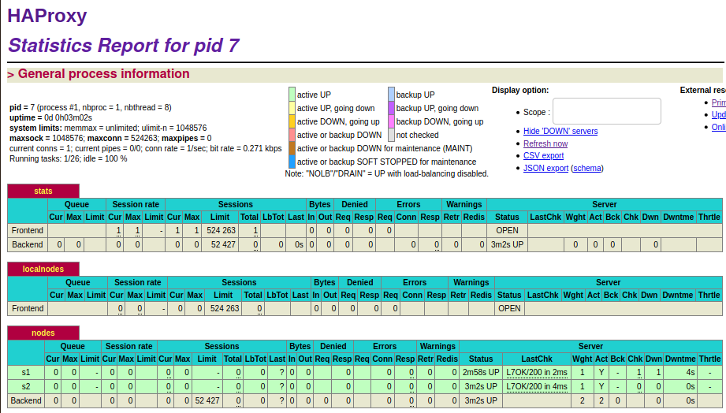

Auteurs: CANIPEL Vincent et SEMBLAT Clément
Introduction
Table des matières
Chapitre 0: Identification des problèmes et installation des outils
Identification des problèmes
Installation des outils
Réponses
On commence par installer le projet avec la commande:
docker-compose up --build
Ensuite, nous pouvons vérifier que les 3 conteneurs soient bien en marche:
CONTAINER ID IMAGE COMMAND CREATED STATUS PORTS NAMES
b253ff9a07c6 teaching-heigvd-ait-2020-labo-docker_webapp1 "docker-entrypoint.s…" 57 seconds ago Up 56 seconds 0.0.0.0:4000->3000/tcp s1
cb7f7c98f379 teaching-heigvd-ait-2020-labo-docker_webapp2 "docker-entrypoint.s…" 57 seconds ago Up 56 seconds 0.0.0.0:4001->3000/tcp s2
6b4c77010e07 teaching-heigvd-ait-2020-labo-docker_haproxy "/docker-entrypoint.…" 57 seconds ago Up 57 seconds 0.0.0.0:80->80/tcp, 0.0.0.0:1936->1936/tcp, 0.0.0.0:9999->9999/tcp ha
Maintenant, nous vérifions le réseaux heig:
NETWORK ID NAME DRIVER SCOPE
3b551039746f bridge bridge local
ce4a0057725e heig bridge local
84becfc0f45a host host local
1e37a6d822d3 none null local
Nous pouvons nous connecter sur l'adresse suivante http://192.168.42.42:1936:
Lien vers le répertoire du laboratoire: https://github.com/petitRastignac/Teaching-HEIGVD-AIT-2020-Labo-Docker
Docker est un technologie qui a été mise en place avec l'esprit suivant: un conteneur, un processus. Dès lors, dès qu'un processus se termine son conteneur va s'arrêter. Afin d'éviter cette situation nous allons utilise run superviseur de processus: S6.
On remplace le TODO: [S6] Install dans la docker image de HAProxy et de l'application WEB.
# TODO: [S6] Install
# Download and install S6 overlay
RUN curl -sSLo /tmp/s6.tar.gz https://github.com/just-containers/s6-overlay/releases/download/v2.1.0.2/s6-overlay-amd64.tar.gz \
&& tar xzf /tmp/s6.tar.gz -C / \
&& rm -f /tmp/s6.tar.gz
On modifie le LABEL par notre nom et email:
# TODO: [GEN] Replace with your name and email
LABEL Vincent Canipel <vincent.canipel@heig-vd.ch>
On configure S6 comme le principal processus sur les deux images:
# TODO: [S6] Replace the following instruction
# This will start S6 as our main process in our container
ENTRYPOINT ["/init"]
Si on construit et on fait tourner les images, on n'obtient rien:
s1 | [services.d] done.
s2 | [services.d] done.
ha | [services.d] done.
Il faut mettre en place les scripts pour faire fonctionner correctement notre superviseur, ainsi on commence par créer les dossiers /services/ha et /services/node:
mkdir -p ha/services/ha webapp/services/node
Puis on copie les fichiers run.sh dans ces nouveaux fichiers:
cp cp ./ha/scripts/run.sh ./ha/services/ha/run && chmod +x ./ha/services/ha/run
cp /webapp/scripts/run.sh /webapp/services/node/run && chmod +x /webapp/services/node/run
Puis on remplace #!/bin/sh par #!/usr/bin/with-contenv bash dans les deux fichiers run.
Finalement, on modifie de nouveau les deux Dockerfiles:
# TODO: [S6] Replace the two following instructions
# Copy the S6 service and make the run script executable
COPY services/ha /etc/services.d/ha
RUN chmod +x /etc/services.d/ha/run
# TODO: [S6] Replace the two following instructions
# Copy the S6 service and make the run script executable
COPY services/node /etc/services.d/node
RUN chmod +x /etc/services.d/node/run
Après toutes les modifications précédentes, on reprend une capture d'écran du tableau de bord à l'adresse: http://192.168.42.42:1936.
Cette tâche a pour but de modifier le comportement originel du système de docker qui est basiquement: un processus pour un conteneur. La configuration est assez difficile car elle demande d'imbriquer plusieurs éléments avec le superviseur S6.
Cette installation consiste alors à remplacer le mode de lancement normal d'un conteneur en passant avec un superviseur qui utilisera son propre script de fonctionnement pour gérer les processus du conteneur dans lequel il est installé.
On installe ce genre de processus pour éviter que les conteneurs, en cas de crash s'éteignent complètement et nécessitent alors d'être totalement relancés. En effet, les superviseurs offrent un plus grand champs d'action dans la gestion des processus comme pouvoir:
- Relancer un process en cas de crash
- Relancer un groupe de process en cas de problème
- Faciliter le lancement des différents process
- Utiliser plusieurs process qui ont besoin d'une certaine coordination
Le but de cette partie est de rendre l'infrastructure plus flexible pour pouvoir ajouter ou supprimer dynamiquement des serveurs web. Pour cela nous allons utiliser serf qui va nous permettre de faire communiquer les agents entre eux par un système peer-to-peer décentralisé.
Le but a atteindre sera alors:
On commence par installer Serf, pour cela nous modifions les Dockerfiles de HAProxy et de l'application WEB:
# TODO: [Serf] Install
# Install serf (for decentralized cluster membership: https://www.serf.io/)
RUN mkdir /opt/bin \
&& curl -sSLo /tmp/serf.gz https://releases.hashicorp.com/serf/0.8.2/serf_0.8.2_linux_amd64.zip \
&& gunzip -c /tmp/serf.gz > /opt/bin/serf \
&& chmod 755 /opt/bin/serf \
&& rm -f /tmp/serf.gz
Maintenant, il convient de faire les configurations sur notre superviseur pour l'utilisation du service Serf. On créée un fichier dédié pour HAProxy et l'application WEB:
mkdir ./ha/services/serf ./webapp/services/serf
Puis, on y ajoute des exécutables run:
touch /ha/services/serf/run && chmod +x /ha/services/serf/run
touch ./webapp/services/serf/run && chmod +x ./webapp/services/serf/run
On utilise le code du répertoire pour ces exécutables.
Après la création des deux scripts, on se doit de les prendre en compte dans les Dockerfiles. Ainsi, on ajoute aux deux:
COPY services/serf /etc/services.d/serf
RUN chmod +x /etc/services.d/serf/run
Et on expose les ports pour la communication avec Serf:
# TODO: [Serf] Expose ports
# Expose the ports for Serf
EXPOSE 7946 7373
On vérifie si tous fonctionne maintenant. On reconstruit les images. Puis on nettoie les dossiers et fichiers inutiles avec les commandes:
rm /ha/scripts/run.sh
rm -r /webapp/scripts
On cherche à récupérer les logs de nos conteneurs. On commence par lancer le conteneur ha avec la commande suivante:
docker run -d -p 80:80 -p 1936:1936 -p 9999:9999 --network heig --link s1 --link s2 --name ha haproxy
Puis les conteneurs s1 et s2 avec les commandes:
docker run -d --network heig --name s1 webapp
docker run -d --network heig --name s2 webapp
Les logs de cette étape sont dans le fichier /logs/task2
Le problème que les noeuds soient codés en dure dans les configurations peut s'adresser avec une solution comme Serf. En effet, Serf permet de rendre plus fléxible la gestion des noeuds en les rendant dynamiques.
C'est à travers son système de communication que Serf va permettre aux serveurs d'application de communiquer avec le load balancer pour pouvoir le 'reconfigurer' avec leurs apparitions et disparitions.
Serf peut maintenir une liste de membre par exemple des noeuds et lorsque l'un d'entre eux est en échec, Serf peut communiquer avec les autres membres et le load balancer pour l'avertir de l'événement et modifier ses configurations.
Serf fonctionne grâce à l'utilisation de Serf agent. Chaque noeud doit posséder un Serf agent afin de pouvoir récupérer ses informations, gérer des potentiels événements, détecter des crashs... Ceux sont ces Serf agents qui définissent ensemble un Serf cluster.
Les fonctionnalités de Serf fonctionnent grâce au GOSSIP protocol qui permet une communication rapide entre les différents agents d'un même cluster. Le GOSSIP protocol fonctionne en utilisant UDP et est basé sur "SWIM: Scalable Weakly-consistent infection-style Process Group Membership Protocol". Par exemple, afin de pouvoir détecter l'inactivité d'un noeud Serf passe par le protocole GOSSIP qui va envoyer de manière périodique et aléatoirement des vérifications. Si un noeud ne répond pas à la vérification, il sera noté suspicieux par tous les noeuds du cluster (par propagation). Si le noeud suspicieux ne lève pas les suspicions, il sera considérer comme éteint et sortira du cluster.
Nous allons ajouter des scripts pour que Serf puisse gérer quand un membre quitter ou rejoint la liste des membres.
touch ./ha/scripts/member-join.sh && chmod +x ./ha/scripts/member-join.sh
touch ./ha/scripts/member-leave.sh && chmod +x ./ha/scripts/member-leave.sh
Puis maintenant on copie les scripts du répertoire git pour member-join.sh et member-leave.sh.
Puis on modifie l'image Docker de HAProxy pour faire en sorte que le conteneur puisse les utiliser:
# TODO: [Serf] Copy events handler scripts
COPY scripts /serf-handlers
RUN chmod +x /serf-handlers/member-join.sh
RUN chmod +x /serf-handlers/member-leave.sh
Maintenant, nous reconstruisons l'image pour HAProxy et nous lançons la commande suivante (On récupère les logs):
docker run -d -p 80:80 -p 1936:1936 -p 9999:9999 --network heig --name ha haproxy
Puis, on lance un des deux backend conteneurs (On récupère les logs puis rapidement encore ceux de ha):
docker run -d --network heig --name s1 webapp
docker run -d --network heig --name s2 webapp
Maintenant, nous allons récupérer les logs dans le fichier serf.log dans le conteneur de HAProxy avec les commandes suivantes:
docker exec -ti ha /bin/bash
cat /var/log/serf.log
Les logs sont disponibles dans le répertoire dans le dossier /logs/task3:
haSEUL représente les logs de ha quand il est le seul conteneur a être lancé.s1 représente les logs de s1 quand il est lancé après hahaAPRESs1 représente les logs de ha après le lancement de s1, on remarque que le script member-join.sh est lancé par l'apparition du noeud de s1.Les logs sont disponibles dans le répertoire dans le dossier /logs/task3 sous le nom de serf.
Pour la mise en place du moteur de template nous allons utiliser NodeJS et Handlebars.
On configure alors le Dockerfile de HAProxy pour ajouter l'installation de NodeJS:
# TODO: [HB] Install NodeJS
# Install NodeJS
RUN curl -sSLo /tmp/node.tar.xz https://nodejs.org/dist/v14.15.1/node-v14.15.1-linux-x64.tar.xz \
&& tar -C /usr/local --strip-components 1 -xf /tmp/node.tar.xz \
&& rm -f /tmp/node.tar.xz
Pour cela on doit ajouter l'installation de xz-utils:
# Install some tools
# TODO: [HB] Update to install required tool to install NodeJS
RUN apt-get update && apt-get -y install wget curl vim iputils-ping rsyslog xz-utils
Puis on installe Handlebars:
# TODO: [HB] Install Handlebars
# Install the handlebars-cmd node module and its dependencies
RUN npm install -g handlebars-cmd
Maintenant nous allons mettre à jour le handler script pour utiliser Handlebars. Alors, on créée le fichier haproxy.cfg.hb dans le dossier ha/config, on utilise la commande suivante:
echo "Container {{ name }} has joined the Serf cluster with the following IP address: {{ ip }}" >> /ha/config/haproxy.cfg.hb
Puis on modifie le Dockerfile pour récupérer ce fichier dans les futures conteneurs:
# TODO: [HB] Copy the haproxy configuration template
RUN mkdir /config
COPY config/haproxy.cfg.hb /config
On met à jour notre script member-join.sh avec le modèle fournit dans le répertoire github.
Et maintenant, on reconstruit l'image de HAProxy. Puis on lance le conteneur et avec les commandes:
docker exec -ti ha /bin/bash
cat /tmp/haproxy.cfg
On récupère les logs que l'on met dans le fichier /logs/task4 avec pour nom haproxycfg1.
On va faire un test end-to-end pour vérifier que tout fonctionne. Alors on va allumer les conteneurs s1 et s2 et vérifier les modifications dans les configurations dans le conteneur ha.
On allume avec la commande docker run -d --network heig --name s1 webapp, le conteneur s1. Puis on vérifie dans le conteneur ha, les modifications de configurations (fichier haproxycfgS1 dans le dossier /logs/task4).
On fait de même avec s2 (fichier haproxycfgS2 dans le dossier /logs/task4).
Dans le fichier /logs/task4, il y a 7 fichiers:
3 premiers fichiers de logs de /tmp/haproxy.cfg:
haproxycfg1, la configuration de la première étape, c'est-à-dire le lancement du conteneur ha.haproxycfgS1, la configuration de la deuxième étape, c'est-à-dire le lancement du conteneur s1.haproxycfgS2, la configuration de la troisième étape, c'est-à-dire le lancement du conteneur s2.dockerps, le résultat de la commande docker psinspectha, le résultat de l'inspection du conteneur ha;inspects1, le résultat de l'inspection du conteneur s1;inspects2, le résultat de l'inspection du conteneur s2;Premièrement, on va copier/coller le contenue de ha/config/haproxy.cfg dans ha/config/haproxy.cfg.hb avec la commande:
cp ./ha/config/haproxy.cfg ./ha/config/haproxy.cfg.hb
Ensuite, nous allons remplacer le contenue entre # HANDLEBARS START et # HANDLEBARS STOP. On obtient alors:
# HANDLEBARS START
{{#each addresses}}
server {{ host }} {{ ip }}:3000 check
{{/each}}
# HANDLEBARS STOP
On remplace le contenue de member-join.sh de nouveau avec le modèle dans le répertoire github. Puis celui de member-leave.sh.
On nettoie un peu nos fichiers de configuration:
ha/services/ha/run:#!/usr/bin/with-contenv bash
rsyslogd -c5 2>/dev/null
# TODO: [CFG] Replace this command
haproxy -f /usr/local/etc/haproxy/haproxy.cfg -p /var/run/haproxy.pid
/nodes pour le Dockerfile de HAProxy:# TODO: [CFG] Create the nodes folder
RUN mkdir /nodes
On relance le tout comme dans l'étape précédente.
Dans le fichier /logs/task5:
3 premiers fichiers de logs de /usr/local/etc/haproxy/haproxy.cfg:
haproxycfg, la configuration de la première étape, c'est-à-dire le lancement du conteneur ha.haproxycfgs1, la configuration de la deuxième étape, c'est-à-dire le lancement du conteneur s1.haproxycfgs2, la configuration de la troisième étape, c'est-à-dire le lancement du conteneur s2.dockerps, le résultat de la commande docker psinspectHA, le résultat de l'inspection du conteneur ha;inspectS1, le résultat de l'inspection du conteneur s1;inspectS2, le résultat de l'inspection du conteneur s2;On trouve deux fichiers dans le dossier /nodes:
root@1c3d6d7aac49:/nodes# ls
6efae4ff505f 92d0365bce2d
On retrouve ces informations dans le fichier nodesFiles2 dans le dossier /logs/task5.
On arrête le conteneur s2, on obtient alors dans le dossier /logs/task5:
haproxycfgSTOP/nodes (disponible nodesFiles3):root@1c3d6d7aac49:/nodes# ls
92d0365bce2d